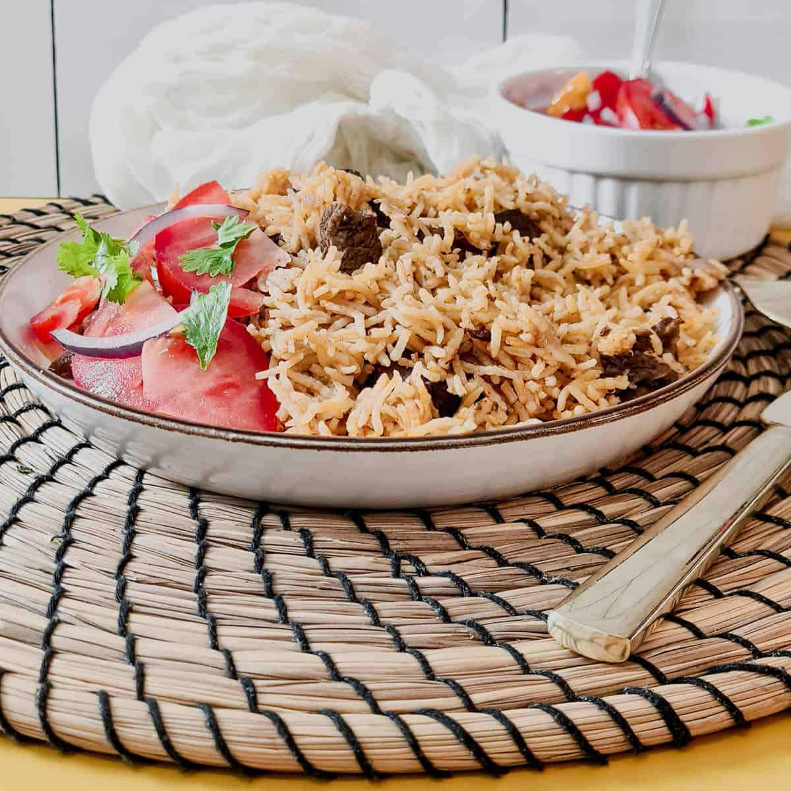

PILAU RICE

Description
Pilau is a specialty along the Swahili Coast in which Rice is flavored with spices and cooked in a well seasoned broth of Meat, Poultry or Fish.
It is also a festive Dish which never misses at every special occasion…
Ingredients
- 1/2 kg rice, washed
- 1/2 kg potatoes, peeled, washed and coarsely chopped
- 1/2 kg beef, chicken or fish filet
- 1 small cup sunflower oil (or any other liquid oil)
- 4 cups of hot water or broth
- 1 onion, chopped
- 5 cloves of Garlic, crushed
- 1 fresh Ginger, crushed
- 2 fresh Tomatoes , sliced
- 2-3 teaspoon Pilau spices
- Salt and pepper to taste
Steps
- Boil beef or chicken with ginger for 10 minutes.
- Add potatoes and let them boil for 5 minutes then set aside (separate the cooked ingredients from the broth so you can use it later)
- Heat oil and fry onions till light brown, add garlic and Pilau spices and on a low heat, fry for 1 minute
- Add tomatoes meat/chicken with potatoes and cook till tender
- Add rice and ensure to mix everything very well before adding your broth or hot water then stir the mixture very well
- Add salt and pepper to taste then cover the pot and cook on medium heat
- When the Food is nearly dry, lower down the heat to very low, cover your Pilau with aluminium paper and place the lid on top.
- Leave to cook for 10 minutes .
- Here you are, your Pilau is ready!Serve your Pilau hot with Kachumbari